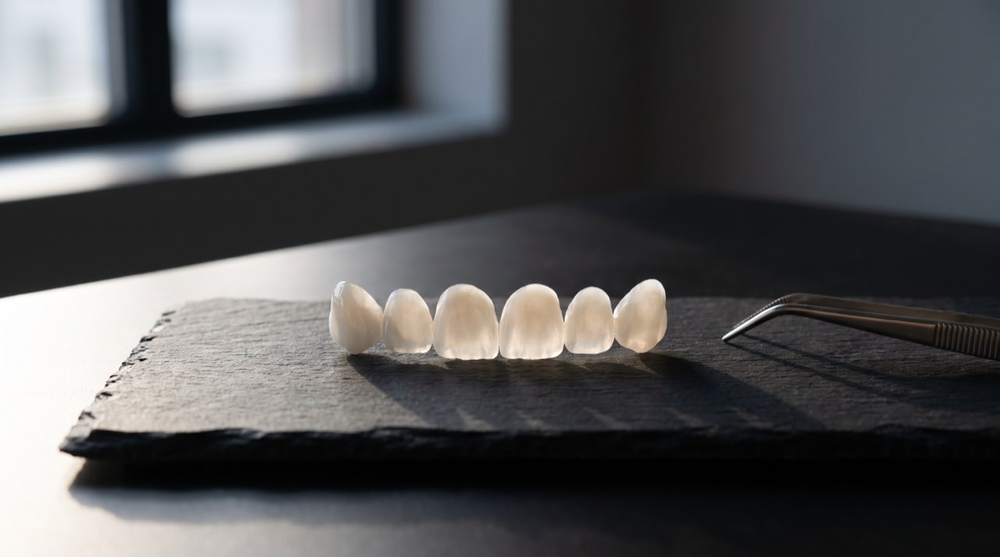
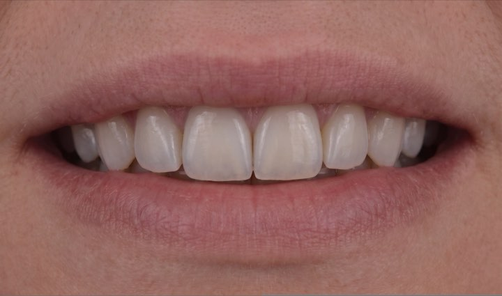
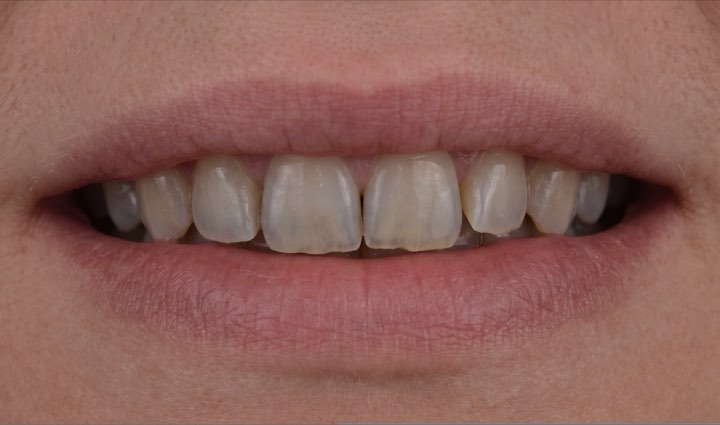
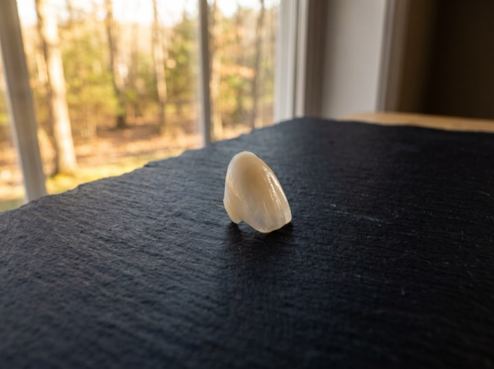
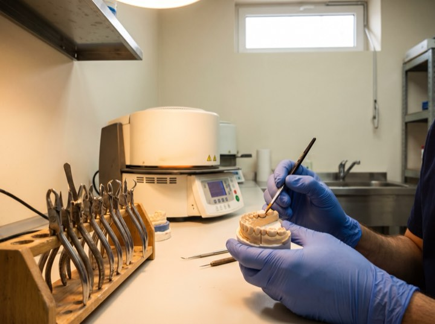
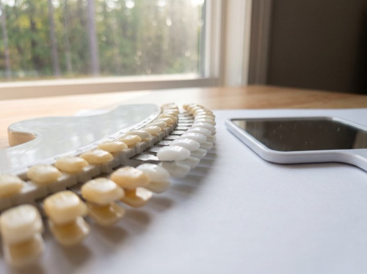
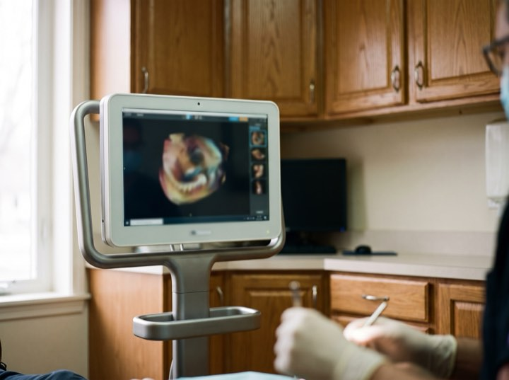
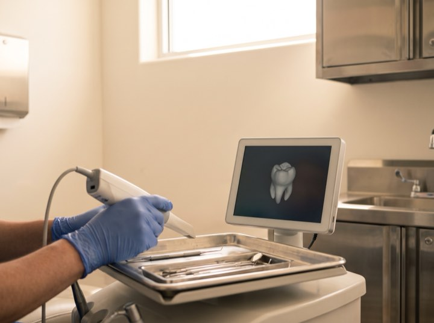
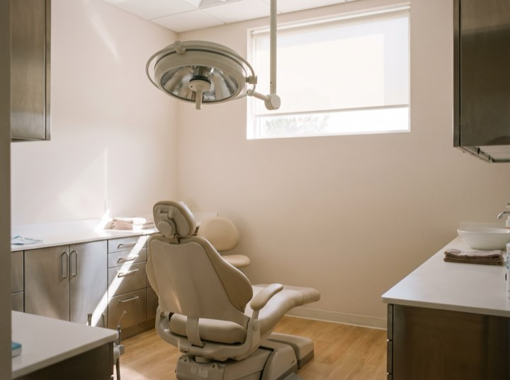

01
Porcelain veneers
Hand-layered by a master ceramist. You approve a digital preview and a trial smile before a single tooth is prepared.
Veneers · Implants · Full-mouth restoration
Fourteen years of veneer, implant and full-mouth cases, photographed at every stage and shown without retouching. Look through them before you speak to anybody.

Services
Every case starts with the same thing: a scan, a preview, and a written plan with a number on it.
Hand-layered by a master ceramist. You approve a digital preview and a trial smile before a single tooth is prepared.
Single tooth to full arch. Guided placement from a 3D scan, which is why they seat precisely and last.
For wear, bite collapse or years of patchwork dentistry. Planned as one outcome rather than a series of repairs.
The lower-commitment start. Often all somebody actually needs, and we'll say so if that's the case.
Results
"The digital preview was the thing. I knew exactly what I was buying."
Marcus D. · Veneers"Financing meant I could actually do it this year instead of someday."
Julia P. · Full-mouth"Sedation option made a fifteen-year phobia manageable."
Rob T. · Implants"Evening slots meant I never took a day off work."
Nadia H. · Whitening & bondingProcess
No surprises and no moving numbers. You see the outcome and the price before anything is prepared.
3D scan, photographs, and a conversation about what actually bothers you. About an hour.
You see your own result rendered before treatment starts, and we adjust it until you're happy.
A fixed plan with a fixed number, plus monthly options. You take it away and think about it.
Most veneer cases are two visits. We review at six months and you have a direct line throughout.
Case 041
Every case in the gallery is shot the same way, on the same background, under the same light. Drag the handle.


The work
Porcelain from the bench, the shade matched in daylight, and the preview that came before all of it.






Most of our patients had. The consult is free, there's no pressure, and you'll leave knowing what it would look like and what it would cost.
Free consultations, and every case you see here was done in this practice by the dentist you would sit with. Financing from 0% APR.